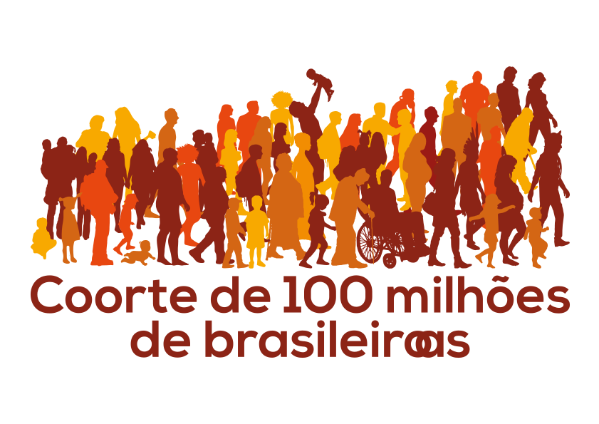

<div class="content row valign-wrapper">
    <div class="container">
        <div class="row center-align">

            <div class="col s6 offset-s3">
                
            </div>

            <div class="col s10 offset-s1 div-intro">
                <p>
                    Utilize esse aplicativo para explorar e entender as características
                    socioeconômicas, demográficas e dados de nascimento e óbitos dessa população.
                </p>

            </div>
        </div>
        <div class = "row">
            <app-search-field class="col s10 offset-s1"></app-search-field>
        </div>

        <div class="row center-align margin-top">
            <div class="btn startbtn offset-s5 waves-effect waves-light" routerLink="/dashboard">
                <span>Iniciar</span>
            </div>
        </div>
    </div>
</div>